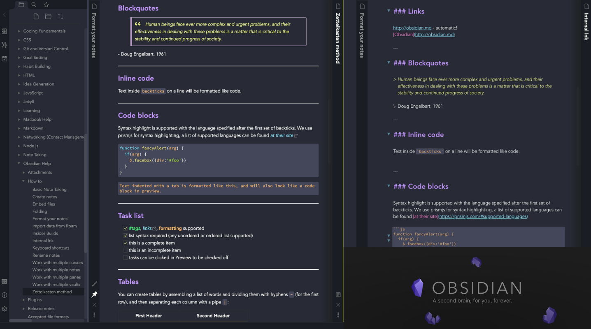

Dracula Theme for Obsidian

Obsidian.md, Offical Dracula Theme
Developed as part of the Dracula open source team.
A fully spec‐compliant dark theme developed for the knowledge management app Obsidian.md, the Dracula specification.
some text
About Me.
I’m a developer with an understanding of business logic, user requirements and a background in project management. (APM qualified).
- Strong data and knowledge management skills.
- Soft skills, working within a team and collaborating cross department at all business levels.
- A logical thinker with strong analytical and problem solving skills.
- Ability to adapt quickly to business requirements, changes in technology and unfamiliar tools.
- Remote work experienced.
I am currently looking for a remote position within an ambitious organisation where I can continue to challenge myself to improve my hard and soft skills.
Contact Me